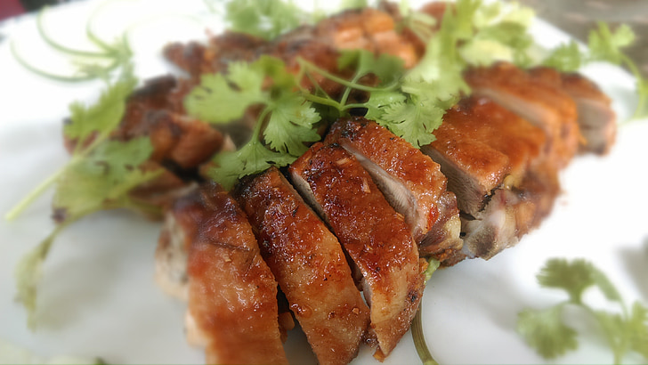

I adapted this recipe from Hank Shaw's article on Hunt Gather Cook. You can find it on https://honest-food.net/roast-duck-recipe/

From Pickpik.com. https://www.pickpik.com/duck-roasted-poultry-cooked-chinese-food-156402
Ingredients
1 domestic duck or 2 fat wild ducks
1 tbsp kosher salt
1 lemon, cut in half
4 sprigs sage, rosemary, parsley, or thyme
Various root vegetables, to taste
Gravy
Conversion
Rate this Recipe
Directions
Set oven to 325°F. Use knife to pierce skin across duck, but don't pierce the meat.
Scrub the skin with cut lemon, then put it and the herbs in the cavity. Salt the skin.
Let sit for 30 minutes to come to room temp while waiting for oven to heat.
Place duck in frying pan and bathe it in root vegetables. Put pan in oven. Cooking time depends on the size of a duck: Wood ducks need 40 minutes, while Pekin ducks need 90 minutes.
Remove duck from oven and remove veggies from tray. Set oven to 450°F. Only return to duck to oven when the oven comes to temp. Roast for 30 minutes or until the skin is crisp.